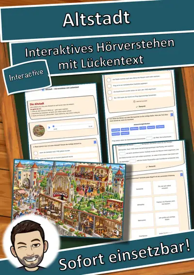

Lesespur: Fotografie: der Bildaufbau – Lesespurgeschichte mit Rätseln (Klasse 9)
Fotografie – der Bildaufbau – Lesespurgeschichte Kunst (Klasse 9)Begib dich mit deiner Klasse auf eine spannende Lesespur über einen Fotowalk durch die Altstadt! Hannes und Ayla erkunden mit ihrer Foto-AG und einer Fotografin, warum manche Fotos einfach besser wirken: Am Stadttor erfahren sie, wie die Fotografie begann, auf der Steinbrücke wählen sie Ausschnitt und Format, am Uhrturm testen sie Frosch- und Vogelperspektive, und am Marktplatz lernen sie die Drittelregel kennen. In der Lindenallee lenken führende Linien den Blick, am Schlossteich spielen sie mit Gegenlicht und goldener Stunde, auf der Caféterrasse mit Einstellungsgrößen und Schärfentiefe, und an der Parkbank geht es um das Recht am eigenen Bild. Ihr Kamerastativ Tripo ist immer dabei. Am Ende jedes Abschnitts verrät ein Hinweis den nächsten Ort auf dem Stadtplan – nur wer richtig liest und mitdenkt, findet den Weg und sammelt alle geheimen Buchstaben zum Lösungswort.
Die perfekte Lesespur für den KUNSTUNTERRICHT der 9. Klasse – ideal als Einstieg vor einem eigenen Fotoprojekt: Sie verbindet motivierendes, sinnentnehmendes Lesen mit Gestaltungswissen und Medienkompetenz. Das Material ist SOFORT EINSETZBAR und in DREI DIFFERENZIERUNGSSTUFEN (leicht ★ / mittel ★★ / schwer ★★★) angelegt.WICHTIG: Das komplette Material ist sowohl in FARBE als auch in SCHWARZ-WEISS enthalten – ideal zum Sparen von Druckkosten.DAS IST ENTHALTEN
- Lesespurgeschichte in 3 Niveaus (leicht, mittel, schwer)
- farbiger Stadtplan als Suchkarte
- Hörverstehen mit QR-Code zur MP3 (selbstständiges Hören mit Kopfhörern)
- vier Aufträge auf dem Weg: ein Verbinde-Rätsel, ein Quiz, eine Rechenaufgabe und ein Steckbrief
- Rätselseite (Wörter-Suchsel + Wissensfragen)
- Ausmalbild zum Thema
- ausführliches Lösungsblatt für die Lehrkraft
- alles zusätzlich als komplette Schwarz-Weiß-VarianteSO GEHT DIE LESESPURDie Jugendlichen lesen ab START, entnehmen dem Text einen Hinweis auf einen Ort in der Altstadt, suchen ihn auf dem Plan und lesen bei dieser Station weiter. An jeder richtigen Station gibt es einen Sammelbuchstaben. Eingebaute Sackgassen (Parkhaus, Apotheke, Fahrradverleih, Spielplatz) liegen zwar in der Altstadt, sind aber keine Stationen und dienen der Selbstkontrolle. Am Ende werden die gesammelten Buchstaben umgestellt und ergeben ein geheimes Lösungswort. (Die Lösungen sind selbstverständlich nur im Lösungsblatt für die Lehrkraft enthalten.)INHALTLICHER SCHWERPUNKTDie Jugendlichen wählen Ausschnitt, Format und Kameraperspektive bewusst, wenden Drittelregel und führende Linien an, nutzen Gegenlicht, Seitenlicht und die goldene Stunde, arbeiten mit Einstellungsgrößen und Schärfentiefe und reflektieren das Recht am eigenen Bild – eine wichtige Grundlage für den verantwortungsvollen Umgang mit Handyfotos.ABGEDECKTER LEHRPLAN (Klasse 9, Kunst)
- Kunst (LehrplanPLUS Bayern) – Klasse 9 „Fotografie – Bildgestaltung“: Ausschnitt, Format und Kameraperspektive bewusst wählen, Drittelregel und führende Linien anwenden, Lichtrichtung, Einstellungsgrößen und Schärfentiefe gezielt einsetzen, das Recht am eigenen Bild beachten und die Wirkung von Fotografien beurteilen.
- Deutsch – Lesen mit Texten und Medien umgehen: Lesestrategien anwenden, Texten gezielt Informationen entnehmen, sinnentnehmend und selektiv lesen; Zuhören: einem Sachhörtext konzentriert folgen (Hörverstehen mit MP3).
- Mathematik – Rechnen im Sachzusammenhang.
- Fächerübergreifend / Kompetenzen: Medienbildung und Persönlichkeitsrechte, genaues Lesen und Prüfen, kreatives Gestalten (Ausmalbild).
Geeignet für Freiarbeit, Stationenlernen, Vertretungsstunden, Wochenplan, Projekttage und Homeschooling. Klassenstufe 9 (differenziert einsetzbar auch in Klasse 8 und 10).
Ähnliche Materialien

Fotografie Lückentext mit Wortspeicher Hörverstehen und Suchsel

Stationenarbeit Fotografie inkl. Musterübung und Lernvideos

Lesespur: Der Frosch – Lesespurgeschichte mit Rätseln (Klasse 5)

Altstadt – Hörverstehen mit Lückentext (interaktiv)

Altstadt Lückentext mit Wortspeicher Hörverstehen und Suchsel

Lesespur: Trainingsplanung: wie man gezielt besser wird – Lesespurgeschichte mit Rätseln (Klasse 10)

Herbst-Forscher-Kamera – Papier-Kamera zum Laminieren mit Foto-Aufträgen und Fotoalbum, 3-fach differenziert (Klasse 1/2)